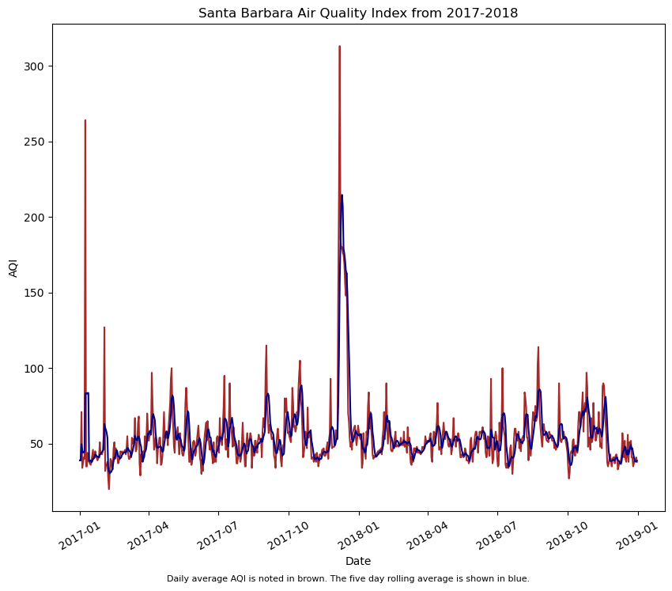
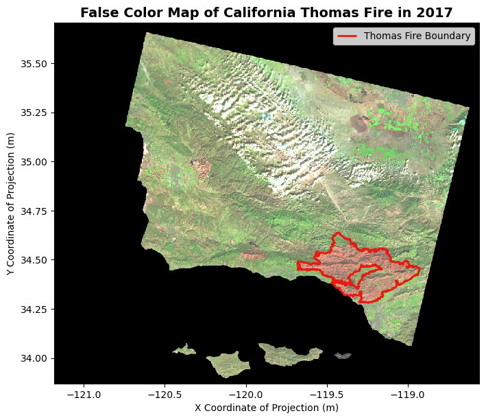

import pandas as pd
import matplotlib.pyplot as plt
import os
# Read in data
aqi_17 = pd.read_csv(os.path.join('data','daily_aqi_by_county_2017.csv'))
aqi_18 = pd.read_csv(os.path.join('data','daily_aqi_by_county_2018.csv'))Exercise 1: Visualizing AQI during the 2017 Thomas Fire in Santa Barbara County
About: The Thomas Fire was the largest wildifre that California had seen at the time. It expanded and scorched 281,893 acres across Santa Barbara and Ventura Counties, and had imemdiate impacts on air quality and existing habitat. This analysis aims to visualize the impacts and spread of the Thomas Fire utilizing the pandas library, practicing with subsetting values related to AQI.
Highlights: This analysis practices important techniques such as joining dataframes in pandas using the concat() function. This allows us to aggregate two data frames in an outer join to look at data more broadly. Another technique that is useful in this exercise is the to_datetime() method in pandas. After exploring the data, we can see that the date column is a listed as a string object, which is not suitable for plotting temporal data. This method then allows us to use set_index() to the date. The last step before plotting is crucial to our analysis and visualization because we do not want to see every single date object in the dataframe. Instead, we can use the rolling() method to specify that we want to take the rolling average over five days. In order to do this, we must select the column that holds the air quality data, aqi and apply the rolling() method, passing in the argument for 5 days. We can then specify that we want to take the mean().
Dataset descriptions: I am using the Air Quality Index (AQI) from the Environmental Protection Agency to visualize the impact on the AQI of the 2017 Thomas Fire in Santa Barbara County.
Link to Github repository:
First step is importing our packages and reading in our data. I am downloading the 2017 and 2018 CSVs from the EPA official website using the pandas function read_csv() from our data folder. os allows us to see the file path for reproducibility.
Great! Now, it is important that we combine the data using the concat() method. This allows the two dataframes to be concatenated into one dataframe, which we are going to call aqi. The next step includes cleaning the names into snake_case. How we do this is by selecting the columns, appending this with str.lower() to put every. columns into lowercase. The final step of this code is replacing the spaces with underscores, using str.replace(). Once this is done, all of the columns will be in tidy format.
# Join the data frames, default outer join
aqi = pd.concat([aqi_17, aqi_18])
# Simplify column names to snake_case (lowercase, replace spaces with underscore)
aqi.columns = (aqi.columns
.str.lower()
.str.replace(' ','_'))For the AQI data, we want to only look at Santa Barbara. In order to do so, we must subset areas within the county_name column where it equals Santa Barbara. We can create a new dataframe with these values. Perfect, now we know that we are looking only at Santa Barbara County, so we can drop the other location indicators like state_name, county_name, state_code, and county_code. We can simply pass this list of column names into the drop() method. We must specify that axis = 1, explicitly telling the method that the axis is the columns. For reference, axis = 0 refers to rows, and axis = 1 refers to columns in this method.
# Find all the observations with the county of Santa Barbara and put it into new dataframe
aqi_sb = aqi[aqi['county_name'] == 'Santa Barbara']
# Remove columns indicated by column labels and axis
aqi_sb = aqi_sb.drop(['state_name', 'county_name', 'state_code', 'county_code'], axis = 1)Perfect! We are one step closer to plotting. What we want to do is look at the air quality index over time from 2017 to 2018, however the issue is that the actual date column contains strings at its current state. Moreover, we must convert it to a datetime object! When working with temporal data, it is super important to put our dates into this format for ease of plotting and data aggregation. We can just specify the column of the dataframe. To take this even further, we can now set the index as the date, which will be ordered from the beginning of the 2017 data to the end of 2018. Pretty cool!
# Specify that we want to convert the date column to a date time object.
aqi_sb.date = pd.to_datetime(aqi_sb['date'])
# Recall the dataframe with the function set_index and pass in date column to make the dates the new index
aqi_sb = aqi_sb.set_index('date')Now it gets a little crazy. It is not always the most visually pleasing to look at the daily AQI data, as it may start to look a little chaotic. In order to account for the amount of data we are dealing with, we can take the rolling average over every 5 days within the time period. The idea is we want to see the rolling average overlaid with the daily object.
This is when the rolling() function comes in. Specifying the values of the AQI column, we are able to pass 5D as an argument because we converted the date to our index as a datetime object. Now all there is to do calculate the mean() of each value in the Series. We can assign this list to a variable, which we can then further initialize a column with this assigned series called five_day_average
# Calculate AQI rolling average over 5 days
rolling_average = aqi_sb['aqi'].rolling('5D').mean()
# Modify and create new column five day average that lines up with the rolling average object. Check to verify.
aqi_sb['five_day_average'] = rolling_averageNow that all those steps are out of the way, we can plot!
# Declare fig size so that positioning is clear for labels and captions
plt.figure(figsize = (10,8))
# Plot both the daily and five day averages for AQI
plt.plot(aqi_sb.index.values,
aqi_sb['aqi'],
color = 'brown')
plt.plot(aqi_sb.index.values,
aqi_sb['five_day_average'],
color = 'darkblue')
plt.xticks(rotation = 30) # Rotate xticks so that all dates fit on x axis
plt.xlabel('Date')
plt.ylabel('AQI')
plt.title('Santa Barbara Air Quality Index from 2017-2018')
plt.figtext(0.5, -0.001, 'Daily average AQI is noted in brown. The five day rolling average is shown in blue.', wrap=True, horizontalalignment='center', fontsize=8)Text(0.5, -0.001, 'Daily average AQI is noted in brown. The five day rolling average is shown in blue.')
Exercise 2: False Color Imaging of Thomas Fire
Purpose: This notebook aims to use the landsat raster data of Santa Barbara County and create a false color map image with the Thomas Fire boundary.
Highlights: A highlight of this exercise was using a NetCDF dataset and dropping the band dimension. Another highlight was subsetting the variables to create a true color image and learning to account for sensitive outliers that may not show up due to cloud coverage. Moreover, using the robust=True argument with both the true color image and false color image was a key step for this. Reprojecting the CRS of both the Thomas Fire boundary and the landsat data was crucial to mapping.
Dataset Description: The dataset is from a California fire perimeter database from Data.gov. The landsat data is Landsat Collection 2 Level-2 atmosperically corrected surface reflectance data, collected by the Landsat 8 satellite. This data was pre-processed to remove data outside land and coarsen the spatial resolution.
References:
Microsoft Planetary Computer. (n.d.). https://planetarycomputer.microsoft.com/dataset/landsat-c2-l2
Publisher CAL FIRE. (2024, May 14). State of California - California Fire Perimeters (all). Catalog. https://catalog.data.gov/dataset/california-fire-perimeters-all-b3436
In our data folder, we have our landsat data that we will be using to create a visualization of Santa Barbara County. We also created a shapefile of the Thomas Fire boundary that we will later overlay on top of the landsat image. The goal here is to use the landsat data and create a false color image to highlight changes indicated by the Thomas Fire boundary.
import pandas as pd
import os
import numpy as np
import xarray as xr
import rioxarray as rioxr
import geopandas as gpd
import matplotlib.pyplot as plt
from shapely.geometry import box
pd.set_option('display.max_columns', None) Read in our data!
# Filepath using OS for reproducibility
landsat_df = rioxr.open_rasterio(os.path.join('data',
'landsat8-2018-01-26-sb-simplified.nc'))
# Read in thomas boundary shapefile
thomas_boundary = gpd.read_file(os.path.join('data',
'thomas_fire.shp'))Preliminary Landsat Data Exploration
The landsat data is an xarray.Dataset with 3 dimensions: band, x, and y. The band dimension has a length of 1 while both the x and y dimensions have lengths of 5. The data variables each show a different pieces that make up the false color imagery including, red, green, blue, nir08 (near infrared, and swir (shortwave infrared). The CRS is EPSG 32611.
Wrangle Band Data
As we discovered in our preliminary data exploration, the landsat_df is not exactly a dataframe. This object is a NetCDF created with a Rioxarray. There are elements to this that make the landsat data unfit for visualization, so we must wrangle the data to get it in the proper format for false color imaging.
# Drop the band dimension of the data
landsat_df = landsat_df.squeeze().drop_vars('band')squeeze() is a method that removes all dimensions of the NetCDF with a length of 1. In this case, the band dimension is a length of 1. The drop_vars() method specifies which element we want to remove, and returns the result rioxarray. I then called the dataset as a checkpoint to ensure the functions performed how I intended. Now that the band has been dropped, we can now start to visualize by selecting groups of the electromagnetic spectrum that are used in remote sensing.
True Color Image
# Select red, green, and blue variables into an array and plot
landsat_df[['red', 'green', 'blue']].to_array().plot.imshow()Clipping input data to the valid range for imshow with RGB data ([0..1] for floats or [0..255] for integers).
What we see here is a sort of aggregated summary of the landsat data that excludes outlying values in our spectral bands. The clouds act as a barrier between the land cover and the satellite, so we cannot see the true color image. The RGB values were outliers, allowing the image to be squished into what looks like a blank outline of the land area. In the second output, using the robust=True argument adjusts the scale to be more sensitive to outliers, giving us the true RGB image. The next step is to select short infrared, near infrared, and red bands for false color imaging. Voila!
# Robust parameters resolve the cloud cover issue
landsat_df[['red', 'green', 'blue']].to_array().plot.imshow(robust=True)
False Color Image
Now, what we notice about the True Color Image is it does not show subtle changes in the land use due to the bands we selected. False color imaging allows us see these differences more clearly. We can select the short infrared, near infrared, and red spectral bands. Can you guess where the fire happened?
# Select short infrared, near infrared, and red bands to plot
# Make plot sensitive to outliers with robust = True
landsat_df[['swir22', 'nir08', 'red']].to_array().plot.imshow(robust = True)
Map Thomas Fire Perimeter
Now, we can overlay our Thomas Fire boundary shapefile with our false imaging. For geospatial data, we must make sure the projections align. I have created a conditional check for the coordinate reference systems. If the thomas boundary and landsat coordinate reference systems are not the same, then the code will reproject both to EPSG:4326 for uniformity.
# Check to make sure CRS's match, if not reproject
if thomas_boundary.crs != landsat_df.rio.crs:
thomas_boundary= thomas_boundary.to_crs("EPSG:4326")
landsat_df = landsat_df.rio.reproject("EPSG:4326")Perfect! We are now ready to plot. We can plot our thomas boundary on the same axes as the false color image. We can adjust the boundary polygon attributes like color and linewidth how it seems fit.
# Set fig and axes
fig, ax = plt.subplots(figsize = (8,8))
# Select bands and plot false color
landsat_df[['swir22', 'nir08', 'red']].to_array().plot.imshow(robust = True)
# Plot boundary on the same axes, label the legend
thomas_boundary.boundary.plot(ax = ax,
color = '#E9190F',
label = 'Thomas Fire Boundary',
linewidth = 2)
# Show legend
ax.legend()
# Label Title and Axes for cleanliness
ax.set_title("False Color Map of California Thomas Fire in 2017", fontsize=14, fontweight='bold')
ax.set_xlabel('X Coordinate of Projection (m)')
ax.set_ylabel('Y Coordinate of Projection (m)')Text(44.847222222222214, 0.5, 'Y Coordinate of Projection (m)')
Figure Description
The map above shows a false color image of the land burned by the Thomas Fire in California and surrounding areas. The boundary of the 2017 Thomas Fire is indicated by the red outline on the map. The false color image utilizes the short inrared, near infrared, and red bands in the electromagnetic spectrum to visualize changes in vegetation. Furthermore, the false color imaging shows the secondary succession within the Thomas Fire boundaries, that would not be otherwise noticeable with a True Color Imaging technique. Using this false color, the difference between the land outside of the burned areas is starkly indicated by the green color.